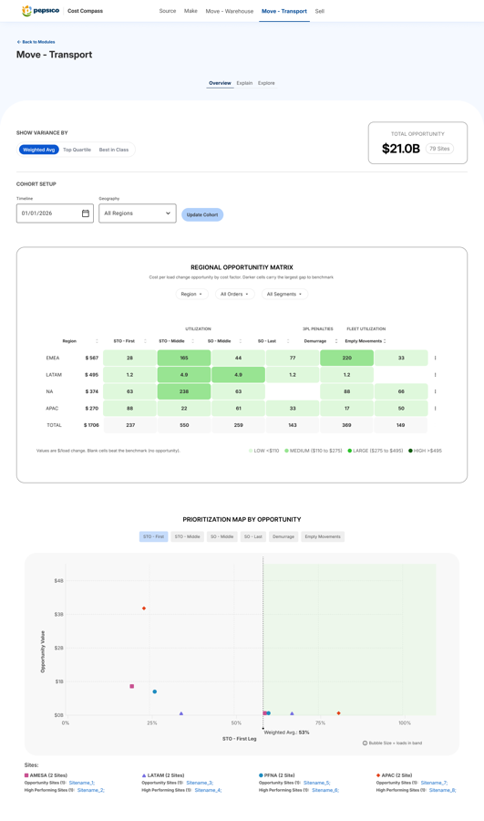

Selected case studies
Recent Work
A curated view of product strategy, AI-enabled workflow design, enterprise decision systems, and visual craft across complex tools.

3-Week Decision-Intelligence POC
Led a fast AI product sprint from vague opportunity to working decision-intelligence POC, shaping the thesis, IA, and roadmap.
Working build, user-feedback loops, and prioritized roadmap choices.
- My role
- UX strategy and functional prototype lead
- Design challenge
- Ambiguity to product direction

Content Operations Agent
Self-initiated an AI content workflow POC that moved from manager pain point to executive validation and funding.
Secured corporate funding for a centralized global rollout.
- My role
- Self-initiated product strategy and prototype
- Design challenge
- Initiative, AI orchestration, and workflow clarity

Scenario Modeling Workspace
Led UX with Google and PepsiCo to turn fragmented GTM scenario planning into a governed workspace pattern.
Phase-one foundation for ownership, comparison, and future predictive modeling.
- My role
- Lead UX, IA, and product strategy
- Design challenge
- Complex systems thinking and stakeholder alignment

Cost Compass Redesign
Redesigned a dense agency-led analytics screen into a cleaner CTX direction with stronger hierarchy and suite alignment.
Two-week redesign grounded in Scoping Pro and stakeholder readability issues.
- My role
- Redesign lead and consulting-group design partner
- Design challenge
- Visual judgment, tradeoffs, and suite alignment
Additional work
More product surfaces.
Supporting projects that show workflow design, analytics UX, ecommerce clarity, and how I use prototyping to ship polished work.
Order Management
Clarified a fragmented order-change workflow from intake to tracking.
→ 06Forecast Analysis
Helped analysts interpret complex forecast outputs with less dependency.
→ 07Portfolio Build
Shows how I use prototyping and AI-assisted development to ship.
→ 08Wonder 3D Prints
Improved ecommerce browsing clarity, trust signals, and checkout momentum.
→